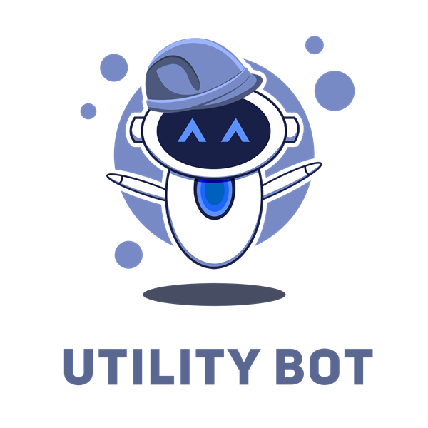

🌐
Configuration Infrastructure Réseau
Conception et configuration d'une infrastructure réseau : adressage, VLAN et routage.
Recherche une alternance — 2026-2027
Spécialisé en cybersécurité et réseaux. Passionné par l'informatique, rigoureux, autonome et curieux. Je recherche une alternance pour 2026-2027 en cybersécurité ou administration système/réseau.
À propos
Étudiant en BTS SIO, spécialisation cybersécurité et réseaux (option SISR), au Lycée Marie Curie à Marseille. Je passe actuellement en 2e année.
Passionné par l'informatique, j'aime comprendre comment fonctionnent les systèmes et les réseaux, les administrer et les sécuriser. Je suis actuellement à la recherche d'une alternance pour 2026-2027, dans le domaine du réseau ou de la cybersécurité.
Trouver une alternance 2026-2027 en cybersécurité ou administration système/réseau.
Français (natif) · Anglais technique (avancé)
Titulaire du BAFA (2025) — animateur en centre social ou de loisir.
Compétences
Portfolio
Réalisations en réseaux/sécurité et en développement.
Conception et configuration d'une infrastructure réseau : adressage, VLAN et routage.
Analyse de sécurité et durcissement d'un système Linux avec mise en place d'un pare-feu.

Bot Discord avec commandes utilitaires, développé en JavaScript et connecté à des API.

Plateforme de cours interactifs pour apprendre les bases du web et des bases de données.
Application web mesurant la vitesse de frappe et le temps de réaction de l'utilisateur.
Parcours
Lycée Marie Curie, Marseille. Solutions d'Infrastructure, Systèmes et Réseaux. Passage en 2e année.
Stages en entreprise (Durant mon BTS)
Premier stage réalisé. Vectorys France
Second stage prévu. En cours de recherche
Obtention du BAFA pour devenir animateur en centre social ou de loisir.
Lycée Denis Diderot. Systèmes d'Information et Numérique.
Contact
Une question, une opportunité d'alternance ? N'hésitez pas à me contacter.